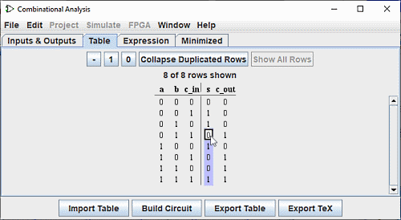

编辑真值表
打开组合分析窗口时，您将看到它由四个选项卡组成。
本页介绍前两个选项卡： Inputs & Outputs 和 Table .。 本指南的下一页介绍了最后两个选项卡：“表达式”和“最小化”。
输入和输出选项卡

Inputs & Outputs 选项卡允许您显示和编辑输入和/或输出列表，并指定其数据的宽度。
要将项目添加到列表中，只需使用 Up Arrow or Down Arrow 选择行或单击“Click to ...”并输入所需的名称。 您可以在输出列表中看到上面插入的“c_out”行。 然后您可以用鼠标定义该行（右侧）的数据宽度。 Enter or Tab 键将结束输入。
如果您想重命名现有行之一，双击文本即可对其进行修改。
要删除一行，请像以前一样使用鼠标或 Up Arrow or Down Arrow 选择它，然后使用 Delete 键。
要重新排列行的顺序，请按上述方式选择它，然后使用 Ctrl+Up Arrow or Ctrl+Down Arrow 组合键可将其在列表中向上或向下移动。
所有操作都会立即影响真值表。
表格选项卡
在 Table 选项卡中，您将找到一系列按钮和当前的真值表。按常规顺序绘制图表，输入构成左侧的列，输出构成左侧的列 正确的。

您可以通过单击感兴趣的值来编辑输出列中显示的当前值。 您可以通过单击您感兴趣的值并使用键盘键 0,1 和 - 来更改输出列中的当前值 （代表未定义的值）或顶部的按钮 - , 1 , 0 。 输入值后，光标在列中向下移动一行。 组合键 向上/向下箭头 或 向左/向右箭头 用于移动选择。
以同样的方式，您可以通过插入不确定值 (-) 或删除它们并用 0 或 1 替换它们来修改输入列中的数据。
在此上下文中，按钮 折叠重复行 简化了表格的表示并 完整显示所有行 。
您可以使用剪贴板复制和粘贴值。 剪贴板可以传输到任何支持制表符分隔文本的应用程序（例如电子表格）。
如果真值表基于现有电路，您可能会在输出列中看到一些带有“E”的红色方块。 这些对应于计算该行的值时发生的错误 - 电路似乎正在振荡，或者输出值是错误值（在 Logisim-evolution 电路中显示为红线）。
导出表、导入表按钮
导入表 和 导出表 按钮允许您保存并分别从 a file 。
下一节: 创建表达式 .